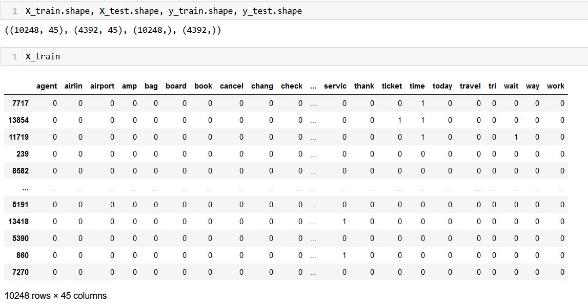
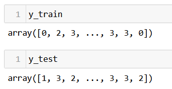

Naive Bayes
Overview
Naïve Bayes methods are a set of supervised learning algorithms based on applying Bayes' theorem with the "naïve" assumption of conditional independence between every pair of features given the value of the class variable.
Text data often results in high-dimensional feature spaces, where the number of features (words or terms) can be very large. Naive Bayes classifiers perform well in such high-dimensional spaces and are not affected by the curse of dimensionality as much as other algorithms. This is one of the greatest strengths of this algorithm.
Naive Bayes classifiers can still perform well even when the training dataset is small. This makes them suitable for tasks where labeled data is limited, which is often the case in text classification problems.
Despite its "naive" assumption of feature independence, Naive Bayes can still perform surprisingly well in practice. In text classification tasks, where the independence assumption might not hold true for all features, Naive Bayes can still produce reasonable results by effectively filtering out irrelevant features.
Naive Bayes classifiers provide straightforward probabilities for class membership, making it easy to interpret their predictions. This interpretability can be valuable in applications where understanding the reasoning behind predictions is essential. In addition, Naive Bayes classifiers are robust to irrelevant features and noisy data. This is particularly advantageous in text classification tasks where the presence of irrelevant words or noise is common.
Data Prep
To split data into training and testing sets without any overlap, you can use the train_test_split function from the scikit-learn library in Python. It internally handles choosing datapoints without replacement, making sure that there are no common data points between training and testing set.
Naive Bayes in python requires all the features to be in numeric form. Here is the sample input dataset:

Link to the data
Applying train test split divide the data and labels into training and testing sets.
X_train
X_test

Y_train and Y_test
Code
Here is the code to implement Naive Bayes algorithm.
Results
Let's take a look at the Confusion Matrix
Let's take a look at the classification metrics:
Conclusion
From the classificaiton report we could see that for the class "good", the accuracy was decent despite the fact that test set had minimum number of samples for that particular class.
This is in conjunction to the fact that naive bayes performs well for those datasets, which have less number of data points. Overall accuracy of the classifier could be further improved using hyperparameter tuning.